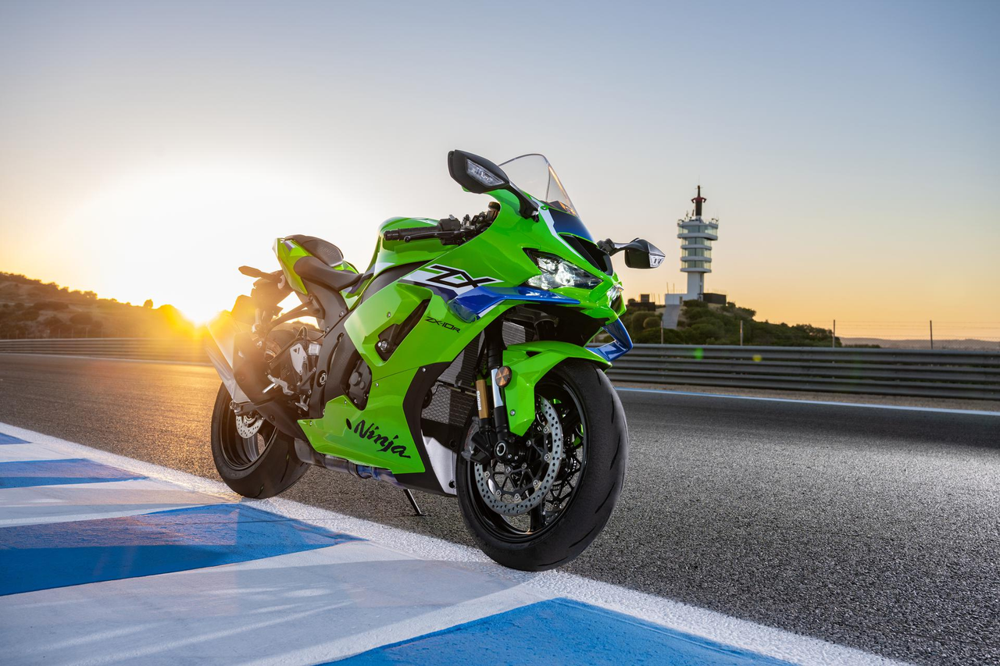

La primera generación de la Kawasaki Ninja ZX-10R, conocida como C1H, fue lanzada en 2004. Esta moto deportiva de alto rendimiento estaba equipada con un motor de cuatro cilindros en línea de 998 cc y ofrecía una potencia impresionante para su época. La C1H se destacó por su diseño agresivo y su capacidad para competir en el Campeonato Mundial de Superbike (WSBK).
En 2006, Kawasaki presentó la segunda generación de la ZX-10R, denominada C2H. Esta versión incorporó mejoras significativas en la aerodinámica, la electrónica y la suspensión. La C2H continuó consolidando la reputación de la ZX-10R como una de las motocicletas deportivas más competitivas del mercado.
La tercera generación, conocida como C3H, fue lanzada en 2008. Esta versión introdujo un nuevo diseño de chasis y mejoras en el motor, lo que resultó en un aumento de potencia y un mejor manejo. La C3H se convirtió en una opción popular entre los pilotos profesionales y los entusiastas del motociclismo.
En 2011, Kawasaki lanzó la cuarta generación de la ZX-10R, denominada C4H. Esta versión presentó un motor más potente y una electrónica avanzada, incluyendo control de tracción y modos de conducción ajustables. La C4H continuó siendo una fuerza dominante en el Campeonato Mundial de Superbike.
La quinta generación, conocida como C5H, fue introducida en 2016 y ha recibido varias actualizaciones desde entonces. Esta versión cuenta con un motor aún más potente, mejoras en la aerodinámica y tecnología avanzada de asistencia al piloto. La C5H sigue siendo una de las motocicletas deportivas más deseadas por los entusiastas del motociclismo y continúa compitiendo con éxito en diversas competiciones a nivel mundial.